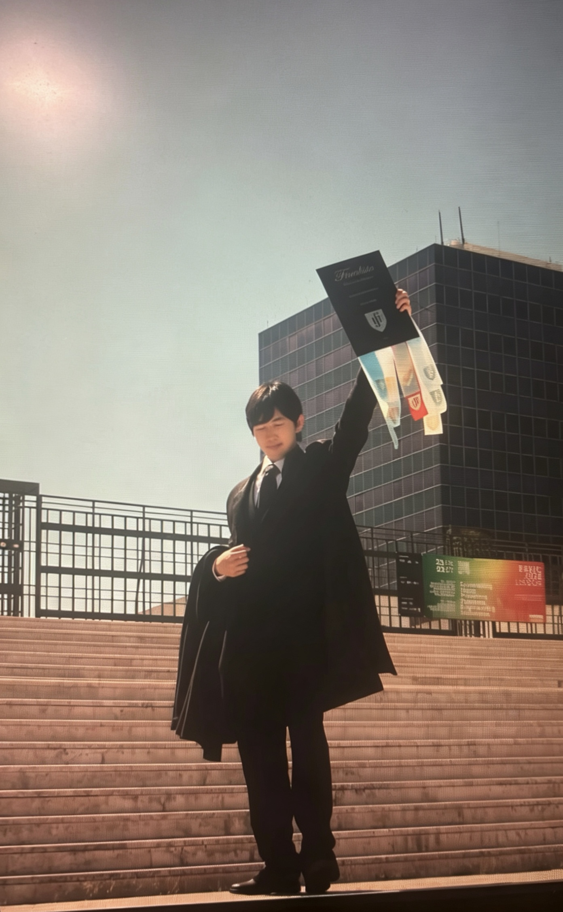

Mr. Leng Hou Meng
Research Assistant
He is currently a year 4 undergraduate student at the University of Macau - Honours College & Faculty of Engineering, majoring in Electromechanical Engineering. His research experiences are anchored by a two-year tenure as a Research Assistant at the Institute of Applied Physics and Materials Engineering, where he specializes in the cleanroom nanofabrication and optoelectronic characterization of 2D materials
Beyond academics, he is actively participating in scout activities, playing multiple musical instruments, racing on tracks, and et cetera. Feel free to send an email for further collaborations.